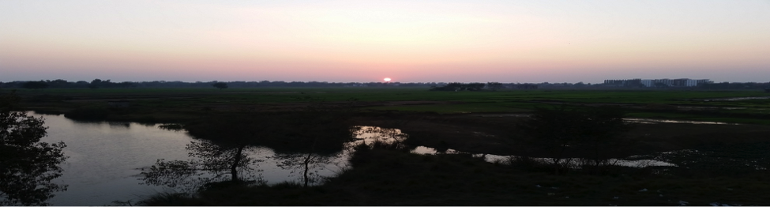
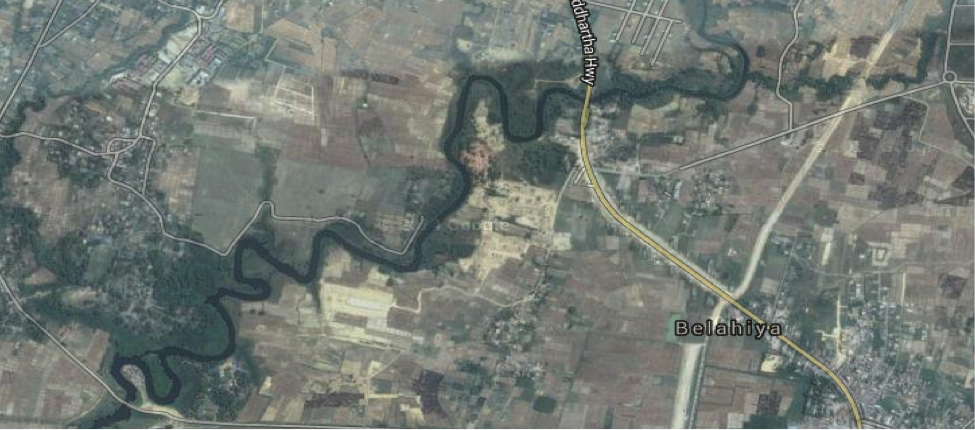

Post-Earthquake Recovery
PNMF is forging collaborations with various national and international partners with a hope to foster innovation to help impoverished rural villages affected by the disaster. After facing two back-to-back earthquake shocks in April 25th and May 12th, the numbers that emerged in Nepal are staggering: more than 8000 deaths, three million displaced, 600,000 homes destroyed, 20,000 schools in ruin, more than 600 rural clinics leveled, several massive landslides, picturesque towns obliterated, and many cultural icons reduced to rubbles. After carrying out the initial rescue and relief efforts to supply food, shelters, and medicine by the government and relief agencies, Nepal is gradually entering into a phase of recovery and reconstruction. The success of Nepal’s recovery effort from this calamity will depend on our ability to understand the way our communities had co-existed with its physical and biological environment.
- Sustainable Home Design: Project Himali Dream [LINK THIS TO A SEPARATE PAGE BY CLICKING MORE]
- The Relief Effort
- One Clinic, One School, One Temple
With over 600,000 homes that must be rebuilt all across the country, PNMF is collaborating with the UNM4Nepal group, Nepal Study Center of the University of New Mexico, the Nepal Engineering College and the Dhulikhel Hospital (Kathmandu University) to design an affordable, sustainable, locally-sourced, and earthquake-tested structure that can provide long-term shelter and safety in impoverished, rural villages.
[Knowing that this structure has been designed around the potential for future earthquakes will help give a traumatized population a sense of physical and psychological security. We will promote sustainability by emphasizing education and training of local volunteers so that communities can replicate and adapt our design.
Examples include, but are not limited to, the development, testing, and dissemination of housing designs for affordable, sustainable, locally-sourced, and earthquake-tested structure that can provide long-term shelter and safety in impoverished, rural villages. This is one of many technologies that will be designed and tested as a part of the Sustainable Technology and Innovation Lab of the Polytechnic College (PNMHI) in collaboration with the national and international partners. Examples of sustainable living ideas include: solar lighting, improved cooking stoves to cut indoor pollution, water filter, rain catchment, bio-gas etc.]
[PHOTOS AND LINK the More TO ANOTHER STAND ALONE PAGE Sustainable Home Design: Project Himali Dream. THIS STANDALONE PAGE WILL HAVE MORE DETAILS ABOUT THE DESIGN, GRAPHICS… VIDEO OF UNM’S PROJECTS.]
After the massive earthquake shock of April 25th, 2015, PNMF’s volunteers participated in various relief efforts. PNMF is continuously seeking support and funding sources to assistant in the recovery effort. Click here for more.
[THE TEXT UNDER PNMF PAGE OF THE PNMHI WEBSITE SHOULD HAVE ENOUGH TEXT FOR A SEPARATE PAGE. ADD SOME PHOTOS OF KHAWA (ASK DEEPAK DAI. YOU CAN ALSO ADD SOME PHOTOS FROM BAHUNEPATI – NAWIN/ASHU HAVE PHOTOS – ASK DEEPAK DAI]
As a consequence of the two massive shocks, some 10,000 schools, more than 600 health clinics and close to 550 cultural heritage sites have been damaged. In many of the rural areas, clinics are often used as community centers to promote various awareness campaigns such as reproductive healt, health literacy, and, in some cases, even for conducting micro finance and micro health insurance programs. . For spiritual Nepali people, seeing the destruction of many temples in the valley was especially heart-wrenching. This is not confined to Kathmandu valley. A woman in a village in Sankhu, when asked about her damaged home, pointed to a temple and pleaded for help. This was the motivation for the 1-1-1 concept.
Taken together, the clinic, the school, and the temple can be taken as a social capital building vehicle. Thus, PNMF and its collaborators believe that the best way to rebuild is to begin at the heart – the clinics, the schools, and the temples that provide the lifeblood of a community. To that end, PNMF is proposing to use Bahunepati as a model project.
Once this project is completed in Bahunepati, the lesson learned from here in terms of design, execution, and community participation will be used in other communities to promote similar construction projects.

